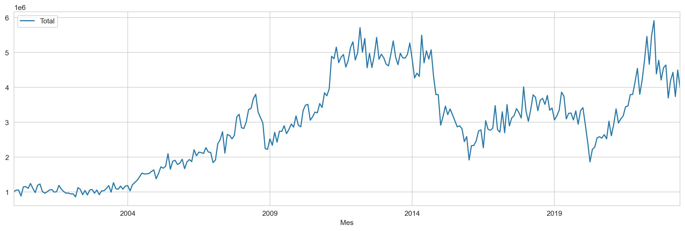
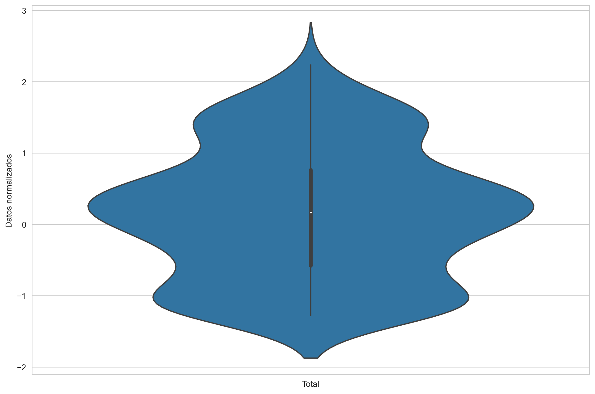
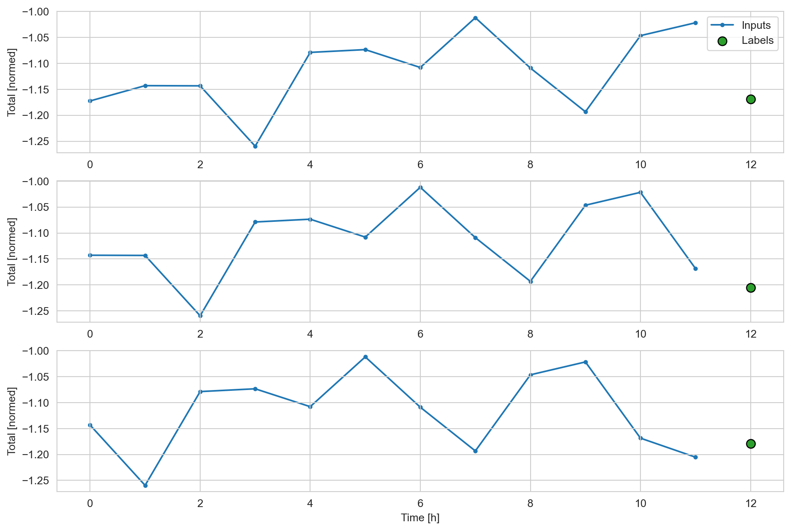

import tensorflow as tffrom tensorflow.keras.callbacks import CSVLogger, EarlyStoppingimport matplotlib as mplimport matplotlib.pyplot as pltimport numpy as npimport osimport pandas as pdimport seaborn as snsimport timeimport gcimport sysfrom statsmodels.graphics.tsaplots import plot_acffrom statsmodels.graphics.tsaplots import plot_pacfprint(f"Tensorflow Version: {tf.__version__}")print(f"Pandas Version: {pd.__version__}")print(f"Numpy Version: {np.__version__}")print(f"System Version: {sys.version}")mpl.rcParams['figure.figsize'] = (17, 5)mpl.rcParams['axes.grid'] =Falsesns.set_style("whitegrid")notebookstart= time.time()
Code
import IPythonimport IPython.display
1.1 Datos
Total de Exportaciones Colombia desde enero del año 2000 hasta junio del año 2023.
Code
# Lectura de la serieExportaciones = pd.read_excel("datos/Exportaciones.xlsx", header =0, usecols = ['Mes','Total']).iloc[96:].reset_index(drop =True).round()Exportaciones['Total'] = Exportaciones['Total'].astype(int) Exportaciones
Mes
Total
0
2000-01-01
1011676
1
2000-02-01
1054098
2
2000-03-01
1053546
3
2000-04-01
886359
4
2000-05-01
1146258
...
...
...
277
2023-02-01
4202234
278
2023-03-01
4431911
279
2023-04-01
3739214
280
2023-05-01
4497862
281
2023-06-01
3985981
282 rows × 2 columns
1.2 Predicción univariada
Se quiere predecir la variable “Total de Exportaciones” (Total) en base a sus retardos. A continuación se presenta el gráfico de la serie de tiempo:
Code
features_considered = ['Total'] # la variable a usar en la predicción es ella mismafeatures = Exportaciones[features_considered] # solo se usará la variable Total en la predicciónfeatures.index = Exportaciones['Mes'] # variable que indica el tiempo (la serie es mensual)features.head()
Code
features.plot(subplots =True, ) # gráfico de la serie de tiempo
array([<Axes: xlabel='Mes'>], dtype=object)

1.3 Separación (Entrenamiento-Validación-Prueba) y Normalización.
El conjunto de datos original se divide en tres partes, de la siguiente manera:
Datos de entrenamiento (70%) para un total de 197 observaciones. Desde 2000-01 hasta 2016-05.
Datos de validación (20%) para un total de 56 observaciones. Desde 2016-06 hasta 2021-01.
Datos de entrenamiento (10%) para un total de 29 observaciones. Desde 2021-02 hasta 2023-06.
Code
# partición del conjuntos de datos en entrenamiento, validación y pruebacolumn_indices = {name: i for i, name inenumerate(features.columns)} # índice = 0n =len(features) # longitud de la serie (282)train_df = features[0:int(n*0.7)] # 2000-01 hasta 2016-05val_df = features[int(n*0.7):int(n*0.9)] # 2016-06 hasta 2021-01test_df = features[int(n*0.9):] # 2021-02 hasta 2023-06num_features = features.shape[1]
# todo el dataframe normalizado por train_mean y train_stddf_std = (features - train_mean) / train_stddf_std = df_std.melt(var_name='', value_name='Datos normalizados')df_std
Code
# plt.subplot(1, 2, 1)# sns.violinplot(y=Exportaciones["Total"])plt.figure(figsize=(12, 8))ax = sns.violinplot(x ='', y ='Datos normalizados', data = df_std)_ = ax.set_xticklabels(features.keys(), rotation=0)

1.4 Configuración del problema de aprendizaje automático
Se definen las clases y funciones necesarias para resolver el problema de redes neuronales por medio de tensores.
Se usará un tamaño de lote de 32.
El número máximo de épocas será de 20.
Code
class WindowGenerator():def__init__(self, input_width, label_width, shift, train_df=train_df, val_df=val_df, test_df=test_df, label_columns=None):# Store the raw data.self.train_df = train_dfself.val_df = val_dfself.test_df = test_df# Work out the label column indices.self.label_columns = label_columnsif label_columns isnotNone:self.label_columns_indices = {name: i for i, name inenumerate(label_columns)}self.column_indices = {name: i for i, name inenumerate(train_df.columns)}# Work out the window parameters.self.input_width = input_widthself.label_width = label_widthself.shift = shiftself.total_window_size = input_width + shiftself.input_slice =slice(0, input_width)self.input_indices = np.arange(self.total_window_size)[self.input_slice]self.label_start =self.total_window_size -self.label_widthself.labels_slice =slice(self.label_start, None)self.label_indices = np.arange(self.total_window_size)[self.labels_slice]def__repr__(self):return'\n'.join([f'Total window size: {self.total_window_size}',f'Input indices: {self.input_indices}',f'Label indices: {self.label_indices}',f'Label column name(s): {self.label_columns}'])
Code
def split_window(self, features): inputs = features[:, self.input_slice, :] labels = features[:, self.labels_slice, :]ifself.label_columns isnotNone: labels = tf.stack( [labels[:, :, self.column_indices[name]] for name inself.label_columns], axis=-1)# Slicing doesn't preserve static shape information, so set the shapes# manually. This way the `tf.data.Datasets` are easier to inspect. inputs.set_shape([None, self.input_width, None]) labels.set_shape([None, self.label_width, None])return inputs, labelsWindowGenerator.split_window = split_window
@propertydef train(self):returnself.make_dataset(self.train_df)@propertydef val(self):returnself.make_dataset(self.val_df)@propertydef test(self):returnself.make_dataset(self.test_df)@propertydef example(self):"""Get and cache an example batch of `inputs, labels` for plotting.""" result =getattr(self, '_example', None)if result isNone:# No example batch was found, so get one from the `.train` dataset result =next(iter(self.train))# And cache it for next timeself._example = resultreturn resultWindowGenerator.train = trainWindowGenerator.val = valWindowGenerator.test = testWindowGenerator.example = example
# Definimos número de épocas necesarias y funciones de pérdidaMAX_EPOCHS =20def compile_and_fit(model, window, patience=2): #patiences como el número de épocas que espera antes de parar# Para evitar sobreajuste early_stopping = tf.keras.callbacks.EarlyStopping(monitor='val_loss', patience=patience, mode='min') model.compile(loss=tf.losses.MeanSquaredError(), optimizer=tf.optimizers.Adam(), metrics=[tf.metrics.MeanAbsoluteError()]) history = model.fit(window.train, epochs=MAX_EPOCHS, validation_data=window.val, callbacks=[early_stopping])return history
1.5 Modelo de red neuronal multicapa
El interés en este caso es predecir el valor del total de las exportaciones 1 paso adelante (siguiente mes) con base en la información disponible de los últimos 12 meses del total de las exportaciones.
A continuación se muestra la configuración del modelo. Se usan las 12 observaciones anteriores para predecir la siguiente.
w1.plot()

1.5.1 Tuning o búsqueda de los hiperparámetros
La búsqueda de los hiperparámetros que minimicen el error cuadrático medio sobre el conjunto de validación se hará con el método BayesianOptimization Tuner. El método consiste en escoger aleatoriamente algunas (pocas) combinaciones de los parámetros, luego basado en el rendimiento de esos hiperparámetros, escoge los siguientes mejores hiperparámetros. Es decir que toma en cuenta el histórico de los hiperparámetros que ya han sido probados en el modelo.
Code
def build_model(hp): model = keras.Sequential() model.add(layers.Dense(units=hp.Int("num_units", min_value=32, max_value=564, step=32), activation=hp.Choice("activation", ["relu", "tanh"])))# Tune the number of layers.for i inrange(hp.Int("num_layers", 1, 5)): model.add( layers.Dense(# Tune number of units separately. units=hp.Int(f"units_{i}", min_value=32, max_value=564, step=32), activation=hp.Choice("activation", ["relu", "tanh"]), ) )if hp.Boolean("dropout"): model.add(layers.Dropout(rate=0.25)) model.add(layers.Dense(1, activation="linear")) learning_rate = hp.Float("lr", min_value=1e-4, max_value=1e-2, sampling="log") model.compile( optimizer=keras.optimizers.Adam(learning_rate=learning_rate), loss="mean_squared_error", metrics=["mean_squared_error"] )return modelbuild_model(kt.HyperParameters())
# Get the top 2 models.models_mlp = tuner_BayesianOptimization_mlp.get_best_models(num_models=2)best_model_mlp = models_mlp[0]# Build the model.# Needed for `Sequential` without specified `input_shape`.best_model_mlp.build(input_shape=(32, 12, 1))best_model_mlp.summary()
1.5.2 Ajuste del mejor modelo con el conjunto de entrenamiento+validación
# Get the top 2 hyperparameters.best_hps_mlp = tuner_BayesianOptimization_mlp.get_best_hyperparameters(5)# Build the model with the best hp.callback=tf.keras.callbacks.EarlyStopping(monitor="loss",patience=5)model_mlp = build_model(best_hps_mlp[0])# Fit with the entire dataset.print(model_mlp.fit(train_plus_val, epochs=20,callbacks=[callback]))
1.5.4 Gráfico de las predicciones sobre los datos de prueba
plt.plot(true_series_final)plt.plot(prediction_test_final)plt.legend(['Respesta real','Predicción de la Respuesta'],loc="best", fontsize=15)plt.ylabel('Y y $\hat{Y}$ en conjunto de prueba', fontsize=15)
Text(0, 0.5, 'Y y $\\hat{Y}$ en conjunto de prueba')
---title: "Redes neuronales"jupyter: python3echo: trueoutput: falsecode-fold: true---## ***Exportaciones***```{python}import tensorflow as tffrom tensorflow.keras.callbacks import CSVLogger, EarlyStoppingimport matplotlib as mplimport matplotlib.pyplot as pltimport numpy as npimport osimport pandas as pdimport seaborn as snsimport timeimport gcimport sysfrom statsmodels.graphics.tsaplots import plot_acffrom statsmodels.graphics.tsaplots import plot_pacfprint(f"Tensorflow Version: {tf.__version__}")print(f"Pandas Version: {pd.__version__}")print(f"Numpy Version: {np.__version__}")print(f"System Version: {sys.version}")mpl.rcParams['figure.figsize'] = (17, 5)mpl.rcParams['axes.grid'] =Falsesns.set_style("whitegrid")notebookstart= time.time()``````{python}import IPythonimport IPython.display```### DatosTotal de Exportaciones **Colombia** desde enero del año 2000 hasta junio del año 2023.```{python}#| output: true# Lectura de la serieExportaciones = pd.read_excel("datos/Exportaciones.xlsx", header =0, usecols = ['Mes','Total']).iloc[96:].reset_index(drop =True).round()Exportaciones['Total'] = Exportaciones['Total'].astype(int) Exportaciones```<br>### Predicción univariadaSe quiere predecir la variable "Total de Exportaciones" (**Total**) en base a sus retardos. <br>A continuación se presenta el gráfico de la serie de tiempo:```{python}features_considered = ['Total'] # la variable a usar en la predicción es ella mismafeatures = Exportaciones[features_considered] # solo se usará la variable Total en la predicciónfeatures.index = Exportaciones['Mes'] # variable que indica el tiempo (la serie es mensual)features.head()``````{python}#| output: truefeatures.plot(subplots =True, ) # gráfico de la serie de tiempo```<br>### Separación (Entrenamiento-Validación-Prueba) y Normalización.El conjunto de datos original se divide en tres partes, de la siguiente manera:- Datos de entrenamiento (**70%**) para un total de **197** observaciones. Desde 2000-01 hasta 2016-05.- Datos de validación (**20%**) para un total de **56** observaciones. Desde 2016-06 hasta 2021-01.- Datos de entrenamiento (**10%**) para un total de **29** observaciones. Desde 2021-02 hasta 2023-06.```{python}# partición del conjuntos de datos en entrenamiento, validación y pruebacolumn_indices = {name: i for i, name inenumerate(features.columns)} # índice = 0n =len(features) # longitud de la serie (282)train_df = features[0:int(n*0.7)] # 2000-01 hasta 2016-05val_df = features[int(n*0.7):int(n*0.9)] # 2016-06 hasta 2021-01test_df = features[int(n*0.9):] # 2021-02 hasta 2023-06num_features = features.shape[1]``````{python}print("longitud dataframe entrenamiento:", train_df.shape)print("longitud dataframe validación:", val_df.shape)print("longitud dataframe prueba:", test_df.shape)``````{python}# Normalización de las observacionestrain_mean = train_df.mean()train_std = train_df.std()train_df = (train_df - train_mean) / train_stdval_df = (val_df - train_mean) / train_stdtest_df = (test_df - train_mean) / train_std``````{python}# todo el dataframe normalizado por train_mean y train_stddf_std = (features - train_mean) / train_stddf_std = df_std.melt(var_name='', value_name='Datos normalizados')df_std``````{python}#| output: true#| fig-align: center# plt.subplot(1, 2, 1)# sns.violinplot(y=Exportaciones["Total"])plt.figure(figsize=(12, 8))ax = sns.violinplot(x ='', y ='Datos normalizados', data = df_std)_ = ax.set_xticklabels(features.keys(), rotation=0)```<br>### Configuración del problema de aprendizaje automáticoSe definen las clases y funciones necesarias para resolver el problema de redes neuronales pormedio de tensores.- Se usará un tamaño de lote de **32**.- El número máximo de épocas será de **20**.```{python}class WindowGenerator():def__init__(self, input_width, label_width, shift, train_df=train_df, val_df=val_df, test_df=test_df, label_columns=None):# Store the raw data.self.train_df = train_dfself.val_df = val_dfself.test_df = test_df# Work out the label column indices.self.label_columns = label_columnsif label_columns isnotNone:self.label_columns_indices = {name: i for i, name inenumerate(label_columns)}self.column_indices = {name: i for i, name inenumerate(train_df.columns)}# Work out the window parameters.self.input_width = input_widthself.label_width = label_widthself.shift = shiftself.total_window_size = input_width + shiftself.input_slice =slice(0, input_width)self.input_indices = np.arange(self.total_window_size)[self.input_slice]self.label_start =self.total_window_size -self.label_widthself.labels_slice =slice(self.label_start, None)self.label_indices = np.arange(self.total_window_size)[self.labels_slice]def__repr__(self):return'\n'.join([f'Total window size: {self.total_window_size}',f'Input indices: {self.input_indices}',f'Label indices: {self.label_indices}',f'Label column name(s): {self.label_columns}'])``````{python}def split_window(self, features): inputs = features[:, self.input_slice, :] labels = features[:, self.labels_slice, :]ifself.label_columns isnotNone: labels = tf.stack( [labels[:, :, self.column_indices[name]] for name inself.label_columns], axis=-1)# Slicing doesn't preserve static shape information, so set the shapes# manually. This way the `tf.data.Datasets` are easier to inspect. inputs.set_shape([None, self.input_width, None]) labels.set_shape([None, self.label_width, None])return inputs, labelsWindowGenerator.split_window = split_window``````{python}def make_dataset(self, data): data = np.array(data, dtype=np.float32) ds = tf.keras.utils.timeseries_dataset_from_array( data=data, targets=None, sequence_length=self.total_window_size, sequence_stride=1, shuffle=False, batch_size=32,) ds = ds.map(self.split_window)return dsWindowGenerator.make_dataset = make_dataset``````{python}@propertydef train(self):returnself.make_dataset(self.train_df)@propertydef val(self):returnself.make_dataset(self.val_df)@propertydef test(self):returnself.make_dataset(self.test_df)@propertydef example(self):"""Get and cache an example batch of `inputs, labels` for plotting.""" result =getattr(self, '_example', None)if result isNone:# No example batch was found, so get one from the `.train` dataset result =next(iter(self.train))# And cache it for next timeself._example = resultreturn resultWindowGenerator.train = trainWindowGenerator.val = valWindowGenerator.test = testWindowGenerator.example = example``````{python}def plot(self, model=None, plot_col='Total', max_subplots=3): inputs, labels =self.example plt.figure(figsize=(12, 8)) plot_col_index =self.column_indices[plot_col] max_n =min(max_subplots, len(inputs))for n inrange(max_n): plt.subplot(max_n, 1, n+1) plt.ylabel(f'{plot_col} [normed]') plt.plot(self.input_indices, inputs[n, :, plot_col_index], label='Inputs', marker='.', zorder=-10)ifself.label_columns: label_col_index =self.label_columns_indices.get(plot_col, None)else: label_col_index = plot_col_indexif label_col_index isNone:continue plt.scatter(self.label_indices, labels[n, :, label_col_index], edgecolors='k', label='Labels', c='#2ca02c', s=64)if model isnotNone: predictions = model(inputs) plt.scatter(self.label_indices, predictions[n, :, label_col_index], marker='X', edgecolors='k', label='Predictions', c='#ff7f0e', s=64)if n ==0: plt.legend() plt.xlabel('Time [h]')WindowGenerator.plot = plot``````{python}# Definimos número de épocas necesarias y funciones de pérdidaMAX_EPOCHS =20def compile_and_fit(model, window, patience=2): #patiences como el número de épocas que espera antes de parar# Para evitar sobreajuste early_stopping = tf.keras.callbacks.EarlyStopping(monitor='val_loss', patience=patience, mode='min') model.compile(loss=tf.losses.MeanSquaredError(), optimizer=tf.optimizers.Adam(), metrics=[tf.metrics.MeanAbsoluteError()]) history = model.fit(window.train, epochs=MAX_EPOCHS, validation_data=window.val, callbacks=[early_stopping])return history```### Modelo de red neuronal multicapaEl interés en este caso es predecir el valor del total de las exportaciones 1 paso adelante (siguiente mes) con base en la información disponible de los últimos 12 meses del total de las exportaciones.```{python}#| echo: true#| code-fold: falsew1 = WindowGenerator(input_width=12, label_width=1, shift=1, label_columns=['Total'])w1``````{python}#| echo: falsefor batch in w1.train.take(1): inputs_train,targets_train = batchprint("Input shape:", inputs_train.numpy().shape)print("Target shape:", targets_train.numpy().shape)``````{python}#| echo: falsefor batch in w1.val.take(1): inputs_val,targets_val = batchprint("Input shape:", inputs_val.numpy().shape)print("Target shape:", targets_val.numpy().shape)``````{python}#| echo: falsefor batch in w1.test.take(1): inputs_test,targets_test = batchprint("Input shape:", inputs_val.numpy().shape)print("Target shape:", targets_val.numpy().shape)``````{python}#| echo: falsew1.train.element_spec```A continuación se muestra la configuración del modelo. Se usan las 12 observaciones anteriores para predecir la siguiente.```{python}#| output: true#| code-fold: false#| fig-align: centerw1.plot()```<br>```{python}#| echo: false## Ejemplo de los lotes en los datos de entrenamientoi=1for batch in w1.train.take(1): inputs, targets = batchprint("Covariable o input",i,inputs)print("Respuesta o etiqueta",i,targets) i=i+1``````{python}#| echo: false## Ejemplo de los lotes en los datos de validacióni=1for batch in w1.val.take(1): inputs, targets = batchprint("Covariable o input",i,inputs)print("Respuesta o etiqueta",i,targets) i=i+1``````{python}#| echo: false## Ejemplo de los lotes en los datos de pruebai=1for batch in w1.test.take(1): inputs, targets = batchprint("Covariable o input",i,inputs)print("Respuesta o etiqueta",i,targets) i=i+1``````{python}#| echo: falseinput_dataset_train = w1.train.map(lambda x,y: x)target_dataset_train = w1.train.map(lambda x,y: y)``````{python}#| echo: falseinput_dataset_val = w1.val.map(lambda x,y: x)target_dataset_val = w1.val.map(lambda x,y: y)``````{python}#| echo: falseinput_dataset_test = w1.test.map(lambda x,y: x)target_dataset_test = w1.test.map(lambda x,y: y)```#### Tuning o búsqueda de los hiperparámetrosLa búsqueda de los hiperparámetros que minimicen el error cuadrático medio sobre el conjunto de validación se hará con el método **BayesianOptimization Tuner**. El método consiste en escoger aleatoriamente algunas (pocas) combinaciones de los parámetros, luego basado en el rendimiento de esos hiperparámetros, escoge los siguientes mejores hiperparámetros. Es decir que toma en cuenta elhistórico de los hiperparámetros que ya han sido probados en el modelo.```{python}#| echo: falsefrom tensorflow import kerasimport keras_tuner as ktfrom tensorflow.keras import layers``````{python}def build_model(hp): model = keras.Sequential() model.add(layers.Dense(units=hp.Int("num_units", min_value=32, max_value=564, step=32), activation=hp.Choice("activation", ["relu", "tanh"])))# Tune the number of layers.for i inrange(hp.Int("num_layers", 1, 5)): model.add( layers.Dense(# Tune number of units separately. units=hp.Int(f"units_{i}", min_value=32, max_value=564, step=32), activation=hp.Choice("activation", ["relu", "tanh"]), ) )if hp.Boolean("dropout"): model.add(layers.Dropout(rate=0.25)) model.add(layers.Dense(1, activation="linear")) learning_rate = hp.Float("lr", min_value=1e-4, max_value=1e-2, sampling="log") model.compile( optimizer=keras.optimizers.Adam(learning_rate=learning_rate), loss="mean_squared_error", metrics=["mean_squared_error"] )return modelbuild_model(kt.HyperParameters())``````{python}tuner_BayesianOptimization_mlp = kt.BayesianOptimization( hypermodel=build_model, objective="val_loss", max_trials=10, num_initial_points=None, alpha=0.0001, beta=2.6, seed=1234, hyperparameters=None, tune_new_entries=True, allow_new_entries=True, max_retries_per_trial=0, max_consecutive_failed_trials=5, overwrite=True, directory="dirsalida", project_name="helloworld")``````{python}#| echo: falsetuner_BayesianOptimization_mlp.search_space_summary()``````{python}stop_early=tf.keras.callbacks.EarlyStopping(monitor="val_loss",patience=0)``````{python}tuner_BayesianOptimization_mlp.search((w1.train), epochs=20, validation_data=(w1.val),callbacks=[stop_early])``````{python}#| output: true# Get the top 2 models.models_mlp = tuner_BayesianOptimization_mlp.get_best_models(num_models=2)best_model_mlp = models_mlp[0]# Build the model.# Needed for `Sequential` without specified `input_shape`.best_model_mlp.build(input_shape=(32, 12, 1))best_model_mlp.summary()``````{python}#| echo: false#| output: falsetuner_BayesianOptimization_mlp.results_summary()```#### Ajuste del mejor modelo con el conjunto de entrenamiento+validación```{python}#| echo: falsetrain_plus_val=w1.train.concatenate(w1.val)###verificar que en efectotrain_plus_val``````{python}#| code-fold: false#| output: true# Get the top 2 hyperparameters.best_hps_mlp = tuner_BayesianOptimization_mlp.get_best_hyperparameters(5)# Build the model with the best hp.callback=tf.keras.callbacks.EarlyStopping(monitor="loss",patience=5)model_mlp = build_model(best_hps_mlp[0])# Fit with the entire dataset.print(model_mlp.fit(train_plus_val, epochs=20,callbacks=[callback]))``````{python}#| echo: falsemodel_mlp.layers[0].get_weights()[0]``````{python}#| echo: falseprint(model_mlp.layers[0].weights)``````{python}#| echo: falseprint(model_mlp.layers[0].bias.numpy())```<br>#### Errores de predicción del modelo```{python}#| output: true#| code-fold: falsemodel_mlp.evaluate(w1.test, verbose=0)``````{python}#| code-fold: falseinput_predict_mlp=tf.constant(np.array(test_df[-17:]),dtype=tf.float32, shape=(17,1,1))prediction_test=model_mlp.predict(input_predict_mlp)*train_std['Total']+train_mean['Total']``````{python}#| output: false#| echo: falseprint(prediction_test.shape)print(prediction_test)``````{python}#| echo: falsei=1for batch in target_dataset_test.take(17):if i==1: targets_test = batch.numpy()elif i>1: targets_test_aux = batch.numpy() targets_test=np.append(targets_test,targets_test_aux) i=i+1``````{python}#| echo: falseprint(targets_test.shape)true_series=targets_test*train_std['Total']+train_mean['Total']true_series=true_series.reshape((17,1,1))print(true_series)``````{python}#| output: true#| code-fold: false# Verdaderos valores vs prediccionesprint(pd.DataFrame({'Verdaderos valores':true_series.reshape(17), 'Predicciones':prediction_test.reshape(17)}))```La raíz del error cuadrático medio de las predicciones respecto a los verdaderos valores en el conjunto de prueba es igual a:```{python}#| output: true#| code-fold: falseerrors_squared=tf.keras.metrics.mean_squared_error(true_series, prediction_test).numpy()print("RECM:",errors_squared.mean()**0.5)``````{python}#| echo: falseerrors_squared```#### Gráfico de las predicciones sobre los datos de prueba```{python}#| echo: falsetest_index=test_df.index[-17:]test_index.values``````{python}#| echo: falsetrue_series_final=true_series.reshape(17)prediction_test_final=prediction_test.reshape(17)``````{python}#| output: true#| code-fold: falseplt.plot(true_series_final)plt.plot(prediction_test_final)plt.legend(['Respesta real','Predicción de la Respuesta'],loc="best", fontsize=15)plt.ylabel('Y y $\hat{Y}$ en conjunto de prueba', fontsize=15)``````{python}```